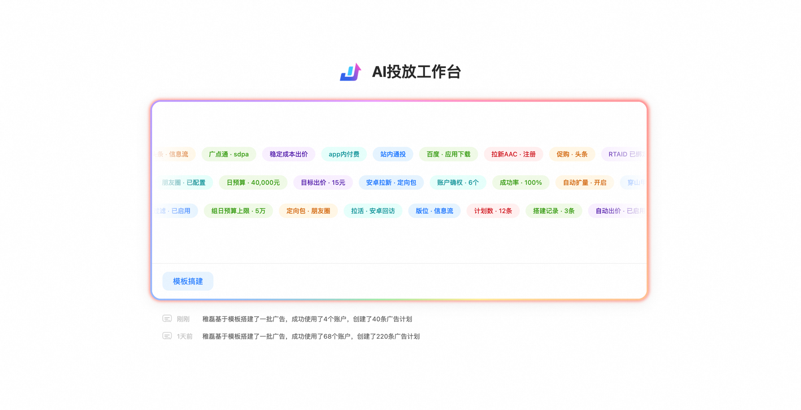
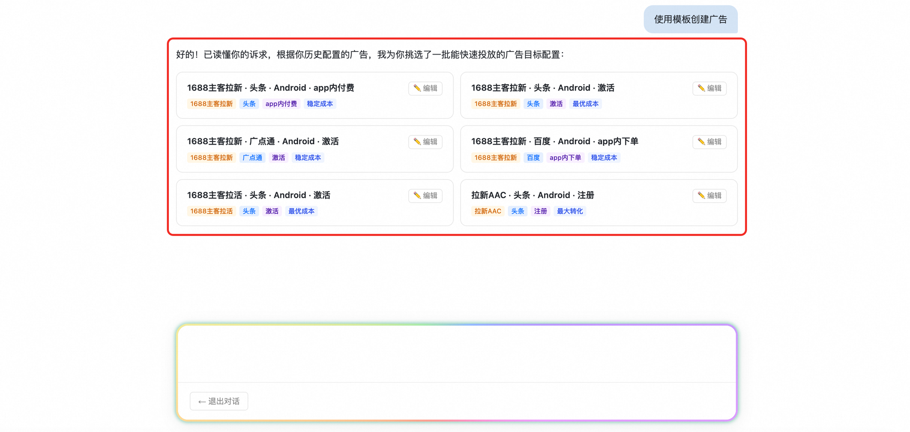
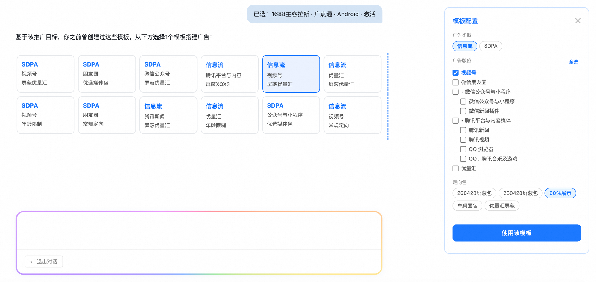
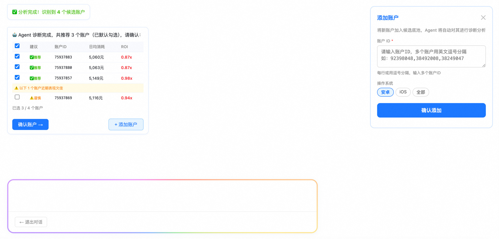
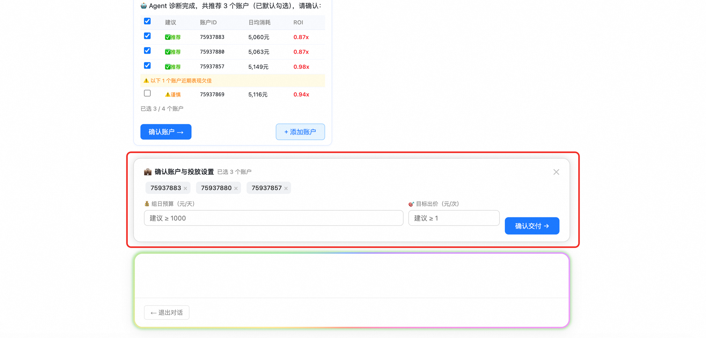

搭建 Agent · 融合版产品需求文档
本文将《广告搭建 Agent — 产品结构化设计文档》的产品设计思路、设计原则、任务流模型，与当前 Demo 的 PRD 交互规则、字段约束和数据结构融合，形成一份可读、可评审、可落地的完整 PRD。
完整 Demo 入口
点击进入搭建 Agent 高保真 Demo，体验从 超级入口、目标配置、模板推荐、账户诊断 到 广告创建成功 的完整链路。
产品定位和设计原则
| 工作流节点 | 所属 Agent 层 | Agent 要完成的判断 | 交互语言表述 |
|---|---|---|---|
| 输入目标 | 目标输入层 | 识别用户要搭建什么业务目标、投放渠道、优化目标和预算意图；将自然语言或模板入口转成结构化任务上下文。 | 用户表达“我要搭建某类投放”后，Agent 用一句话复述目标，并追问缺失的业务条件，形成可继续对话的任务开场。 |
| 目标配置 | 策略约束层 | 把投放目标收敛为可执行约束：任务类型、媒体渠道、RTAID、广告类型、版位、定向包、OS、出价方式等。 | Agent 将业务目标翻译成可选择的目标配置选项，并用“为什么推荐这组配置”的说明帮助用户确认。 |
| 模板匹配 | 策略约束层 | 在目标配置约束下筛选可用自运营模板，避免越过目标约束使用不合法模板。 | Agent 基于目标约束说明可用模板范围，向用户解释每个模板适合的投放场景、风险点和选择理由。 |
| 账户诊断 | 策略约束层 | 基于算法识别诊断账户质量，从账户池中筛选出适合当前目标与模板的一批优质账号。 | Agent 用诊断结论而非字段堆砌与用户沟通：哪些账号推荐、哪些需要谨慎、为什么适合当前投放。 |
| 预算出价 | 执行闭环层 | 确认优质账号集合是否可投，校验预算和出价是否满足投放门槛，并准备最终创建参数。 | Agent 在最终执行前用确认式语言让用户核对账户、预算和出价，并明确提示不满足门槛时需要调整。 |
| 执行创建 | 执行闭环层 | 由 Agent 自动执行广告计划搭建与素材优选；根据历史数据抽样结果选择计划和素材组合，并输出执行结果。 | Agent 在创建前进行二次确认，说明即将创建的内容、影响范围和执行结果；创建后用摘要语言反馈成功或失败原因。 |
目标输入层
负责读懂人的意图，把“我要搭建某类投放”的自然语言诉求转成可被 Agent 执行的任务上下文。
策略约束层
负责把目标转成可执行边界：约束自运营模板、筛选优质账户、限制版位/定向/RTAID 等合法组合。
执行闭环层
负责把经过确认的模板、账户、预算、素材和计划执行落地，生成创建结果、失败归因和搭建记录。
| 结构层 | 核心职责 | 关键机制 |
|---|---|---|
| Agent 核心层 | 根据投放目标约束可使用的自运营模板，并围绕模板、账户、计划、素材组织完整投放链路。 | 以目标配置为入口，将业务目标映射为任务类型、媒体渠道、RTAID、广告类型、投放版位、定向包等约束；只在合法自运营模板集合中推荐和执行。 |
| 决策与规划层 | 由 Agent 输出搭建建议，判断当前最优的模板、账户组合、预算出价建议和下一步操作。 | 常规动作由 Agent 给出建议并等待用户确认；高危风险动作由 Agent 先识别风险、给出决策结论和阻断/确认节点，例如账户为空、预算不足、出价异常、批量创建前二次确认。 |
| 行动执行层 | Agent 根据业务目标自动执行计划搭建、账户投放、素材优选等动作。 | 广告计划搭建和素材优选均由 Agent 基于算法抽样历史数据执行：从历史自运营模板、账户表现、素材池、ROI、消耗、版位适配中选择可执行组合，自动推进到创建结果。 |
| 模型与数据层 | 不断完善投放策略链路，让目标配置、模板、账户诊断、素材优选、创建结果可以持续沉淀和复用。 | 基于 MAPPING_TABLE 识别诊断并筛选优质账号；基于 BUILD_RECORDS 记录每次搭建结果；后续通过成功率、失败原因、账户表现、素材表现反向优化策略链路。 |
| 页面交互层 | 通过超级入口 + 对话流承载多轮人机交互，在深度交互中识别并读懂人的真实投放意图。 | 用户通过点击、输入、补充账户、确认预算出价等动作不断给 Agent 反馈；Agent 将理解结果转化为卡片、表格、右侧面板、浮动确认卡片和创建结果，形成连续对话闭环。 |
主循环边：正常推进
感知 → 理解 → 规划 → 检索 → 执行 → 观察 → 更新 → 再感知。每一次用户确认都会让 Agent 进入下一轮循环，而不是一次性走完所有步骤。
确认边：人机协同
目标配置、投放模板、账户预算、最终创建都必须经过用户确认。确认后才允许 Agent 将当前状态推进到下一节点。
异常边：风险回退
当账户为空、预算不足、出价异常、模板缺失、配对质量不足时，循环不继续前进，而是回退到可修复节点，如补充账户、重选模板或调整预算。
学习边：策略更新
创建结果、失败原因、账户表现、素材表现会回流到模型与数据层，用于优化后续模板推荐、账户筛选和素材优选策略。
顶层架构：超级入口与 Agent 矩阵
| Agent | 定位 | 主要能力 | 与搭建 Agent 的关系 |
|---|---|---|---|
| 搭建 Agent | 0→1 创建广告计划 | 目标配置、模板匹配、账户确权、预算出价、批量创建 | 当前 PRD 主体 |
| 诊断 Agent | 投后归因与异常诊断 | 消耗下滑、ROI 异常、失败原因分析 | 可由搭建记录失败项唤起 |
| 调控 Agent | 实时干预与预算/出价调整 | 调价、预算分配、空耗巡检 | 可承接搭建后的托管任务 |
| 竞价 Agent | 竞价策略优化 | 竞价环境分析、差异化出价策略、效率监控 | 作为后续策略闭环补充 |
核心执行模型：目标配置驱动的三层链路
Layer 1 · 目标配置
定义业务意图与合法边界：任务类型、渠道、平台、推广目标、优化目标、出价策略、建议预算、RTAID、广告类型、版位和定向包。
TARGET_CONFIGSLayer 2 · 投放模板
在目标配置划定范围内选择历史自运营模板，承载具体广告类型、版位、定向包、项目模板和投放子模板。
AD_TEMPLATESLayer 3 · 账户匹配
基于目标配置 + 模板组合，对账户池做 RTAID、渠道、任务、广告类型、OS、版位、出价方式、定向包联合过滤。
MAPPING_TABLE| 产品三环 | Demo 对应步骤 | 用户动作 | Agent 动作 | 产出 |
|---|---|---|---|---|
| 环1：目标配置 | Step 1–3 | 发起搭建并选择目标配置卡片 | 展示 6 套预置配置并写入 tplState | 目标配置快照 |
| 环2：模板适配与账户诊断 | Step 4–6 | 选择投放模板，查看账户诊断 | 匹配 AD_TEMPLATES，过滤 MAPPING_TABLE，输出推荐/谨慎账户 | 模板参数 + 候选账户池 |
| 环3：预算出价与创建确认 | Step 7–8 | 勾选账户、填写预算出价、确认创建 | 校验输入，弹出确认面板，执行广告创建并输出结果 | 创建结果 + 搭建记录 |
任务流工作流程与状态管理
任务层级
- Parent Task：一次业务目标或一次对话触发的任务线
- Flow：同渠道 × 任务 × 广告类型 × RTAID 的配置组合
- Run：一次具体搭建执行记录
- Plan：最终创建出的广告计划
任务流核心规则
- 搭建 Agent 生成的任务归类为「搭建任务」
- 每个任务仅支持单渠道执行，跨渠道需拆分
- 每次对话生成 1 条新任务/Run
- 实验维度为广告计划粒度，非账号粒度
- 任务完成后可下线，无需持续运行
| 任务类型 | 所属 Agent | 目标 | 典型对象 | 状态 |
|---|---|---|---|---|
| 搭建任务 | 搭建 Agent | 创建广告计划 | 账户、版位、模板、计划 | 正常部分成功失败 |
| 诊断任务 | 诊断 Agent | 分析投放问题 | 账户、计划、ROI、消耗 | 完成/待处理 |
| 调控出价 | 调控 Agent | 调价控量 | 计划、策略、人群 | 正常/异常 |
| 预算分配 | 调控 Agent | 动态预算分配 | 账户、计划、预算池 | 正常/预警 |
| 空耗巡检 | 调控 Agent | 识别空耗风险 | 计划、消耗、转化 | 正常/需处理 |
| 竞价任务 | 竞价 Agent | 优化竞价效率 | 出价策略、竞价环境 | 运行中/完成 |
搭建 Agent Demo：8 步关键节点
发起搭建
用户从超级入口选择「使用模板创建广告」，需要明确本次要创建的是广告搭建任务，并进入对话式搭建流程。
填写目标配置
需要确认投放任务类型、媒体渠道、平台 / OS、推广目标、优化目标、出价方式、建议预算、RTAID、广告类型、版位和定向包等基础目标信息。
确认目标配置
用户需要从 Agent 推荐的目标配置中选择一组最符合当前业务诉求的配置，并确认该配置可以作为后续模板和账户筛选的约束条件。
选择投放模板
需要查看模板对应的项目模板、投放子模板、广告类型、投放版位、定向包和适用场景，判断是否符合本次投放目标。
确认模板内容
用户需要确认模板中的广告类型、版位组合、定向包、RTAID、项目模板和投放子模板；如不符合业务目标，需要在确认前调整模板配置。
确认账户诊断结果
需要查看 Agent 给出的推荐账户和谨慎账户，确认账户是否匹配当前渠道、任务类型、消耗能力、预算额度和投放稳定性；如账户不足，可补充账户 ID。
填写账户、预算和出价
用户需要确认最终投放账户，填写组日预算和目标出价；预算需满足最低投放门槛，出价需大于 0，并在提交前核对账户数量和预算分配。
最终确认并创建广告
创建前需要再次确认目标配置、投放模板、账户列表、组日预算、目标出价和创建影响范围；确认后由 Agent 执行创建，并返回成功摘要、失败原因或账户链接。
关键交互规范
SuperCard 对话模式
- 首屏居中展示，进入对话后 fixed 到底部
- 保留跑马灯渐变边框和发光效果
- 顶部显示固定标题栏和退出对话按钮
- 新消息自动滚动至标题栏下方
右侧面板联动
- addAccPanel、createdAdsPanel、tplConfirmPanel、tplDetailPanel 统一 340px 宽
- 打开面板时对话区、底部输入框、账户确认卡片同步左移
- 全部面板关闭后恢复居中
添加账户面板
- 只保留账户 ID 输入框，不再要求选择 OS
- 支持英文逗号、中文逗号、换行批量输入
- 非数字字符自动过滤
- 新增账户 OS 自动继承 tplState.os
账户确认浮动卡片
- 固定在对话框上方，bottom:190px
- 展示已选账户 chip，可删除
- 预算和出价实时 hint
- Enter 可提交，× 可关闭
页面操作步骤截图与交互规则
Step 1：首页 / 超级入口

进入搭建 Agent 首页，定位 SuperCard / 模板搭建入口。
- 首页需展示搭建入口、历史记录入口与 Agent 工作台能力。
- 点击入口后进入 heroConvMode，对话区展开。
Step 2：目标配置宫格

点击模板搭建入口，等待 Agent 输出目标配置卡片。
- 展示 6 个 TARGET_CONFIGS 卡片。
- 点击卡片后写入 tplState，并自动进入模板匹配。
Step 3：模板推荐宫格

选择一个目标配置后，等待模板推荐结果。
- 按 targetConfigId 查询 AD_TEMPLATES。
- 模板卡片展示广告类型、版位、定向包、RTAID。
Step 5：添加账户面板

点击「+ 添加账户」，打开右侧 addAccPanel。
- 面板只保留账户 ID 输入框。
- 支持逗号/换行批量输入，新增账户 OS 自动继承 tplState.os。
Step 6：账户确认浮动卡片

关闭添加账户面板，点击「确认账户 →」。
- 弹出 acctConfirmBar，展示账户 chip、组日预算、目标出价。
- 预算 ≥1000，出价 >0。
业务规则、字段与约束
| 字段 | 含义 | 约束/用途 |
|---|---|---|
| taskType | 任务类型 | 1688主客拉新 / 拉新AAC / 拉活 / 促购 / 商业化获客 |
| channels | 媒体渠道 | 头条 / 广点通 / 百度 / 快手 / B站；任务流要求单渠道执行 |
| platform / osFilter | 平台与操作系统 | Android/iOS 展示，安卓/iOS 用于账户过滤 |
| promotionGoal | 推广目标 | 应用下载 / 应用唤起 |
| optGoal / bidMethod | 优化目标/出价方式 | app内付费 / app内下单 / 激活 / 注册 / 首次付费 |
| rtaid | RTA 策略 ID | 模板索引和账户召回关键字段 |
| adType | 广告类型 | sdpa / 信息流 |
| placements | 投放版位 | 按媒体渠道枚举，多选 |
| targeting | 定向包 | 与平台、版位、任务类型联动 |
| 步骤 | 决策规则 | 规则说明 | 输出结果 |
|---|---|---|---|
| Step 1 账号底池召回 | 取近 7 日有消耗账号为候选底池 | 只纳入近 7 日存在真实消耗的账号，剔除无消耗、不可判断投放能力或近期无有效样本的账号。 | 近 7 日有效消耗账号池 |
| Step 2 精确分层 | 渠道 × 任务类型 × 消耗分层 | 先按渠道 × 任务类型做精确匹配，确保账号与当前目标配置同业务语境；再按近 7 日消耗的 P20/P80 分位数切分为低消耗、中消耗、高消耗 3 档。 | 同渠道、同任务、同消耗层级的账号分组 |
| Step 3 分层内最优配对 | 每个消耗分层下通过全局最优算法做最优配对 | 在每个分层内，基于协变量计算多维距离，并使用全局最优配对算法寻找最相似的 1v1 配对组合，目标是让总体配对距离最小。 | 最优 1v1 账号配对组合 |
| Step 4 低质量剔除 | 超过卡尺阈值的配对自动剔除 | 如果两个账号在关键协变量上的差异超过卡尺阈值，说明配对质量不足，不能进入推荐账户集合。 | 剔除低质量配对后的优质账号集合 |
配对协变量
- 历史 7 天消耗
- 目标 DAU
- LTV
- 历史 7 天消耗、目标 DAU、LTV 的稳定性
- 预算、额度
账户诊断输出
- 优先展示同渠道、同任务类型、同消耗层级下的高质量账户组合
- 通过全局最优配对后的账号标记为「推荐✅」
- 未通过卡尺阈值或稳定性不足的账号标记为「谨慎⚠️」或从推荐集合中剔除
- 最终输出需解释推荐原因：消耗能力、目标 DAU、LTV、稳定性、预算/额度匹配度
| 渠道 | 版位结构 | 规则 |
|---|---|---|
| 头条 | 通投智选、今日头条、西瓜视频、抖音短视频、穿山甲 | 支持父子联动与多选 |
| 广点通 | 微信公众号与小程序、腾讯平台与内容媒体、视频号、朋友圈、优量汇 | 按平台动态展示 |
| 快手 | 快手主站、智能优选、快手联盟 | 快手开屏禁用 |
| 百度 | 百青藤、百度站内 | 子版位可展开选择 |
| B站 | 全站通投、首页推荐、播放器贴片 | 单渠道枚举 |
搭建记录、失败归因与对话回放
列表视图
按 Flow 分组展示 Run 记录。列字段包括搭建时间/操作人、目标配置、约束条件、模板、确权账户、预算&出价、计划成功率、状态、操作。
消息视图
以时间线展示创建内容、渠道、广告素材、创建人、成功率、创建时间。点击「创建内容」打开完整对话工作流回放。
- 全部成功：绿色状态，成功率 100%。
- 部分成功：橙色状态，展示「查看失败记录」。
- 全部失败：红色状态，失败记录需展示计划名、账号、时间、失败原因。
| 节点 | 回放内容 |
|---|---|
| 元信息栏 | 创建时间、创建人、渠道、任务、计划成功率 |
| Step 1–3 | 用户发起搭建、Agent 推荐目标配置、用户确认目标配置 |
| Step 4–5 | Agent 匹配模板、用户选择项目模板/投放子模板 |
| Step 6–7 | 账户诊断表格、用户确认账户、预算、出价 |
| Step 8 | 广告创建结果，成功/失败摘要与失败原因卡片 |
数据结构附录
tplState
全局流程状态：targetConfigId、taskType、channels、platform、bidMethod、placements、adType、os、rtaid、targeting、budget、bid、projTpl、placTpls。
TARGET_CONFIGS
目标配置数组，当前 Demo 内置 6 套。选中后自动写入 tplState 并驱动模板匹配。
AD_TEMPLATES
按 targetConfigId 索引的历史自运营模板，包含 adType、display、placements、targetingFull、rtaid、projTpl、placTpls。
MAPPING_TABLE
账户映射表，包含 accId、rtaid、platform、task、bidMethod、placement、adType、os、targetId、targeting。
PLACEMENT_TREE
各媒体渠道的父子版位树，支持父子联动、三态选择、禁用节点和账户预检置灰。
BUILD_RECORDS
搭建记录结构：Flow → Run。支持任务流聚合、成功率统计、失败原因、消息回放。